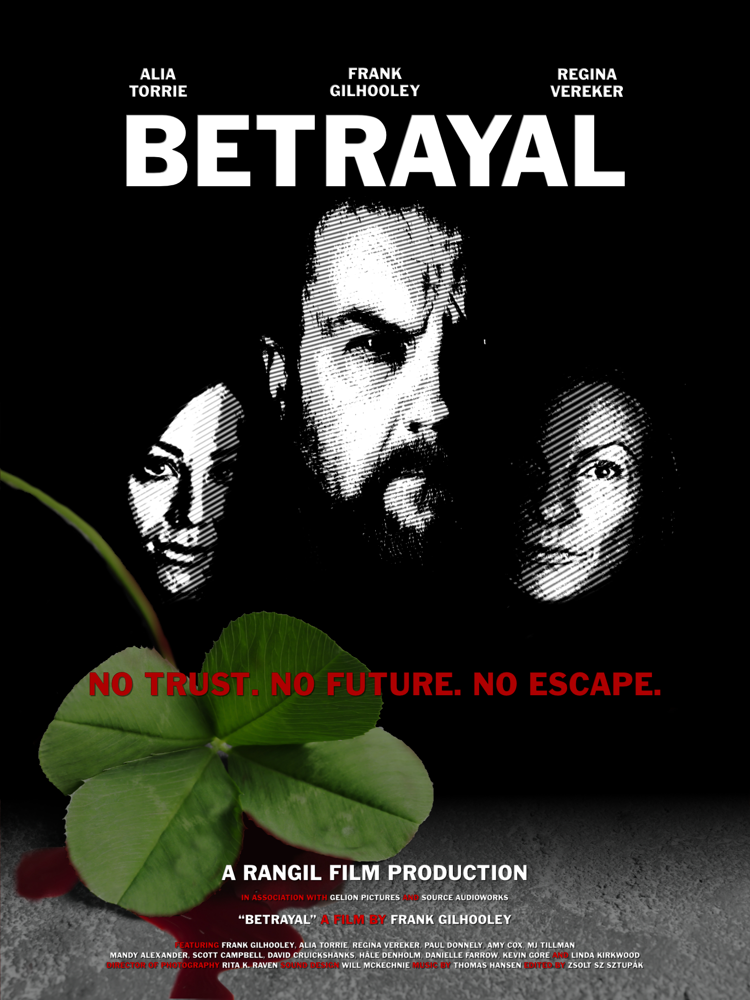

Betrayal
A Film By Frank Gilhooley
Available now
Watch on Prime Video in the United Kingdom , USA , and Worldwide
Watch also on Tubi TV worldwide where available.
Synopsis
As the UK moves forward into the uncharted territory of post Brexit reality, the people of Northern Ireland brace themselves for the consequences. For one man it’s a single bullet. For others, it’s a private war to save a nation.
Links
Trailers
VIDEO
VIDEO
Poster

Credits
Cast
Frank Gilhooley Paddy O’Hara Alia Torrie Darna O’Hara Regina Vereker Diane Haston Paul Donnely Kenneth Mcguiness Amy Cox Jill Walsh MJ Temple Mike O’Connel Kevin Gore Freedom Fighter Danielle Farrow Sylvia Hodgeson Mandy Alexander Brydon Kelly Scott Campbell Brandon Donovan David Cruickshanks Michael O’Brian Hâle Denholm Cait Miller linda Kirkwood Fiona Flinn Iain Dempster Séan Ryan Yvonne Roberts Sophie Roberts Creighton King Arnold King James MacDonald Drew Gough Alessia Kozlova Cher Donata Mhari Chirnside Gillian Willis Martin Lyons Cronan McCarthy Andy MacGregor Donald Franklin Isla Vereker Young Diane Haston
Crew
Written and Directed by Frank Gilhooley Director of Photography Rita K. Raven Sound Design Will McKechnie Edited by Zsolt Sz. Sztupák Composer Thomas Hansen Assistant Director Regina Vereker 1st Assistant Camera Zsolt Sz. Sztupák 2nd Assistant Camera Amy Cox Second Unit Camera Operator Hâle Denholm Drone Operator Rita K. Raven Sound Mixer Will McKechnie VFX Coordinator Zsolt Sz. Sztupák
Score
“Betrayal”
Original Film Score
Composed and Performed by Thomas Hansen
“Are You With The One You Love”
Written by Douglas Macintyre
Performed by Sugartown
Vocals by Gwen Stewart
Available on iTunes and Spotify
“The Foggy Dew”
Performed by Willos’
Available from Claddagh Records
“Ballysillan”
Written and Performed by Willos’
Available from Claddagh Records
“The Foggy Dew”
Performed by Athenrye
Available on iTunes and Spotify
“Seán South of Garryowen”
Performed by Athenrye
Available on iTunes and Spotify
“The Isle of France”
Performed by Kevin Gore
Available on iTunes and Spotify
“Freedom Fighter”
Written and Performed by Kevin Gore
Available on iTunes and Spotify
Thanks
Angie Gilhooley Callum McDougal Richard McDonald James McGuire Jill Grieve and Family Steven Colquhoun and The Barony Castle Hotel, Eddleston The Owners and Staff Of The Tontine Hotel, Peebles The Horseshoe Inn, Eddleston Old Parish Church of Peebles Peebles Police The Patient Residents of Peebles and Eddleston The Family and Friends of The Cast & Crew
Filmed in
Peeblesshire, Scottish Borders, Scotland
Production Baby
Copyright